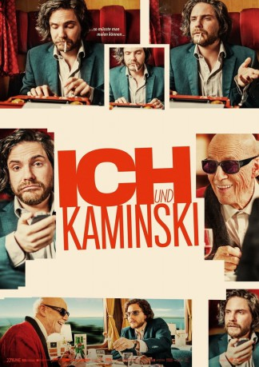
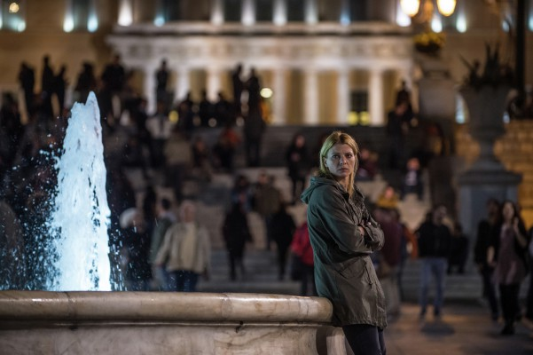

#3317 Ich und Kaminski
 gesehen am 01.04.2016
gesehen am 01.04.2016
 
 IMDB-Wertung: 6.7 / 10
IMDB-Wertung: 6.7 / 10  Metascore: 0
Metascore: 0 
Deutschland kurz vor der Jahrtausendwende. Sebastian Zöllner, Kunstjournalist und Meister der Selbstüberschätzung, plant seinen großen Coup: ein Enthüllungsbuch über den legendären, aber fast vergessenen Maler Manuel Kaminski, Schüler von Matisse und Freund von Picasso, der einst als “blinder Maler” Berühmtheit erlangte. Der skrupellose und ehrgeizige Karrierist macht sich auf den Weg zu dem entlegenen Chalet hoch oben in den Alpen, wo der greise Künstler zurückgezogen und von Vertrauten abgeschirmt lebt. Er dringt in Kaminskis Haus, Leben und Vergangenheit ein und nimmt ihn kurzerhand mit auf eine halsbrecherische und irrwitzige Reise zu dessen tot geglaubter Jugendliebe. Unterwegs will er ihm mit List und Dreistigkeit seine Geheimnisse entlocken. Aber bald muss er feststellen, dass er dem Alten, ob blind oder nicht, in keiner Weise gewachsen ist.
Jahr: 2015
Dauer: 123 Minuten
FSK: 6
Land: Belgien Studio: X Verleih AGTonspuren:
Untertitel: Deutsch,
Auflösung: 1080p (1920x1040) Größe: 7362 MB
Genre: Drama
Regisseur: Wolfgang Becker
Drehbuch: Wolfgang Becker, Daniel Kehlmann, Thomas Wendrich, Achim von Borries
Soundtrack: Lorenz Dangel
Darsteller:
 Daniel Brühl als Sebastian Zöllner
Daniel Brühl als Sebastian Zöllner Jesper Christensen als Manuel Kaminski
Jesper Christensen als Manuel Kaminski Amira Casar als Miriam Kaminski
Amira Casar als Miriam Kaminski Geraldine Chaplin als Therese
Geraldine Chaplin als Therese Denis Lavant als Karl-Ludwig
Denis Lavant als Karl-Ludwig-  Jördis Triebel als Elke
 Jan Decleir als Holm
Jan Decleir als Holm Karl Markovics als Komponistenzwilling
Karl Markovics als Komponistenzwilling Patrick Bauchau als Prof. Megelbach
Patrick Bauchau als Prof. Megelbach- Michael Fuith als Kellner im Speisewagen
 Jo Cameron Brown als Fiona McLure
Jo Cameron Brown als Fiona McLure- Bruno Cathomas als Golo Moser
- Viviane de Muynck als Anna
 Milan Peschel als Eugen Manz
Milan Peschel als Eugen Manz Stefan Kurt als Bogovich
Stefan Kurt als Bogovich Josef Hader als Zugbegleiter
Josef Hader als Zugbegleiter Jacques Herlin als Dominik Silva
Jacques Herlin als Dominik Silva- Benjamin de Lajarte als Dominik Silva, young
- Serge Merlin als Portier
 Peter Kurth als Hochgart
Peter Kurth als Hochgart- Andrea Zogg als Dr. Vögeli
- Axel Neumann als Prof. Mehring
- Tambet Tuisk als Junger Kaminski
- Dorothea Gebhardt als Junge Therese
- Andrew Dallmeyer als Mr. Clure
- Lucie Aron als Jana
- Luzia Braun als TV-Moderatorin
- Nikolai Makarov als Prof. Komenev
- Anne Morneweg als Alte Dame
- Karin Pfammatter als Pensionsbesitzerin
- Jim Adhi Limas als Bodhidharma
- Martin Langenbeck als Vikar
- Anna Amalie Blomeyer als Frau im Zugabteil
- Tanja Fanzun als Pensionsmädchen
- Jean-Baptiste Filleau als Taxifahrer
- Laetitia Giorgini als Kellnerin Clairence
- Lydia Kavina als Theremin-Spielerin
- Pamela Knaack als Kassiererin Tankstelle
- Anne Hélène Kotoujansky als Tänzerin
- Javier Tucat Moreno als Pianist
- Dean Morris als Soho Art Gallery Owner
- Marc Philipps als Backenbärtiger Assistent
- Frank Schneider als Zugabfertiger
- Marie Simonet als Schlechtgelaunte Kellnerin
 Christian Steyer als August Walrat
Christian Steyer als August Walrat- Karen Verbrugge als Frau auf Parkplatz
 Steven Weisz als Taxi Driver
Steven Weisz als Taxi Driver- Thomas Wendrich als Komponistenzwilling / Vikar 2
- Desheng Zhou als Chinesischer Bauernjunge
 Daniel Zillmann als Alonzo Quilling
Daniel Zillmann als Alonzo Quilling
Datei: X:\2015(G-M)\Ich und Kaminski (2015, FSK6, 1920x1040).mkv seit 11.03.2016
Festplatte: HD 2015(A-Z)
 Es gibt insgesamt 129 Filme in der Gruppe '2015(G-M)'
Es gibt insgesamt 129 Filme in der Gruppe '2015(G-M)'